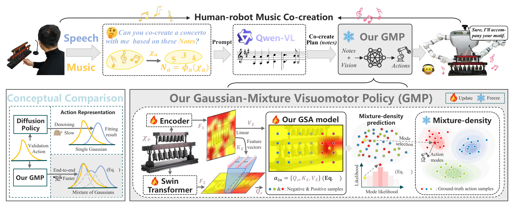

Co-policy: Responsive Human-Robot Co-Creation for Musical Performances
Art has long stood as a pivotal expression of human creativity, and music is a compact but demanding testbed for embodied artificial intelligence. Most generative AI systems create disembodied content: text, images, audio, or symbolic scores. A robot musician must do something harder. It must understand an incomplete human seed, contribute a complementary musical response, and realize that response through timed physical contact with an instrument.
Co-policy is a modular embodied AI agent for human-robot musical co-creation. It combines semantic intent grounding, constrained musical variation, and a low-latency Gaussian-Mixture Visuomotor Policy (GMP), allowing a chime-striking robot to move beyond playback and participate in physically grounded musical interaction.


A modular embodied co-creation agent
The core challenge is to connect semantic musical understanding with real-time, physically executable action. Co-policy addresses this through three coupled modules: a semantic anchor bank for Qwen-VL, a constrained musical variation planner, and a single-pass mixture-density visuomotor policy for robot execution.

Unlike robotic playback systems that merely reproduce user-specified notes, Co-policy interprets an incomplete creative seed under musical and physical constraints. The semantic anchor bank provides style descriptors, technical annotations, score context, robot-playability tags, and structured target plans. The planner preserves the human motif while introducing harmonic, rhythmic, or accompaniment variation.
Why a Gaussian-Mixture Visuomotor Policy?
A single target note can be reached through multiple feasible motions, such as a top-down strike, side swing, or gentle tap. Deterministic behavior cloning tends to average these alternatives, while diffusion-policy execution can preserve multimodality at the cost of repeated denoising. GMP represents these alternatives as latent action modes and predicts mixture parameters in one forward pass.
Evaluating Co-policy on real-robot musical co-creation
We evaluate Co-policy on real-robot chime performance and use ManiSkill2 as a secondary visuomotor generalization sanity check. The real-robot study focuses on whether the agent aligns with human intent, contributes new musical material, executes feasible actions, and responds at interactive speed.
Table values from the paper: Co-policy reaches 0.69 combined chime-striking accuracy and 18.6 Hz post-command action frequency. The frequency measures the visuomotor execution loop after a robot command is available; it is not a full speech-to-action latency claim.
Where do we go from here?
Co-policy points toward embodied AI systems that can participate in artistic practice rather than only generating disembodied media. The current system is still bounded by the semantic anchor bank, the available instrument, acoustic noise, and limited tactile or force feedback. Future work will extend the framework to richer acoustic source separation, contact feedback, additional instruments, multi-robot ensembles, and longer human-AI improvisation.
The implementation is available in the accompanying GitHub repository, including semantic anchors, the constrained music planner, the real-robot execution loop, and ManiSkill2-based evaluation infrastructure.